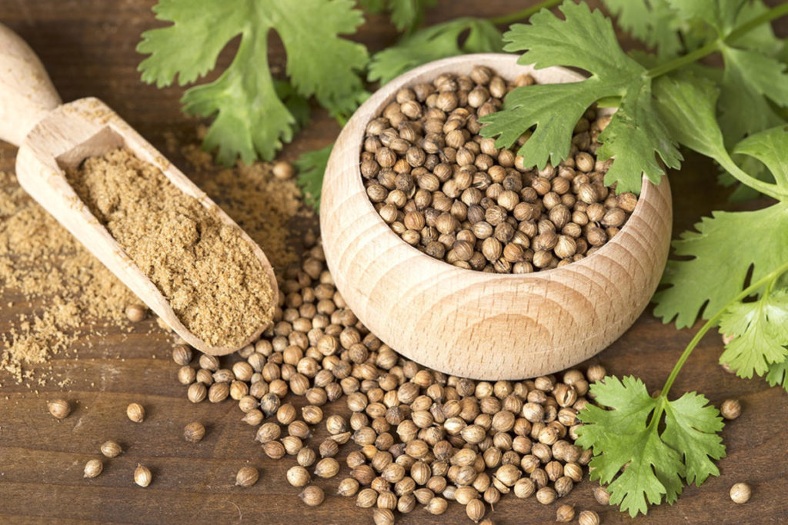

Coriander seeds- 270/kg
Support our locals who are working on the agricultural fields throughout day and night to protect our natural foods and herbs. Buy now.
Product Description
Coriander is an annual herb in the family Apiaceae. The coriander plant produces both the leaves (which is used as cilantro) and the fruit (these seeds are coriander). The plant must be cultivated for only one of these as the “cilantro” leaves must be picked before the plant matures to produce the seeds.
Coriander is normally found both as whole dried seeds and in ground form.Coriander seeds act as a thickener, and its ground form is a common ingredient in curries.Roasted coriander seeds can be eaten as a snack, while boiled seeds are consumed as a traditional medicine for colds.
Coriander is normally found both as whole dried seeds and in ground form.Coriander seeds act as a thickener, and its ground form is a common ingredient in curries.Roasted coriander seeds can be eaten as a snack, while boiled seeds are consumed as a traditional medicine for colds.
Testimonials
Coriander seeds, extract, and oils may all help lower blood sugar. In fact, people who have low blood sugar or take diabetes medication should practice caution with coriander because it’s so effective in lowering blood sugar. Animal studies suggest that coriander seeds reduce blood sugar by promoting enzyme activity that helps remove sugar from the blood. A study in rats with obesity and high blood sugar found that a single dose (9.1 mg per pound of body weight or 20 mg per kg) of coriander seed extract decreased blood sugar by 4 mmol/L in 6 hours, similar to the effects of the blood sugar medication. Coriander extract appears to act as a diuretic, helping your body flush excess sodium and water. This may lower your blood pressure. Some research indicates that coriander may help lower cholesterol as well. One study found that rats given coriander seeds experienced a significant decrease in LDL (bad) cholesterol and an increase in HDL (good) cholesterol. Coriander may reduce unpleasant digestive symptoms like bloating and discomfort often experienced by people with IBS. It may also boost appetite among some people. Coriander contains antioxidants that may protect your skin from aging and sun damage. It may also help treat mild skin rashes.